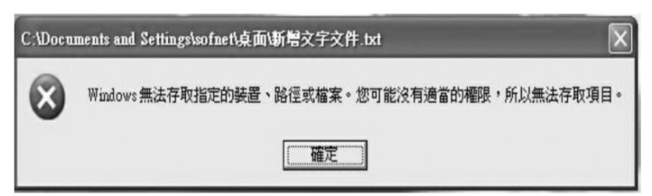

# 文件系统微过滤驱动
微软的 Windows 内核开发者开发了一个新的驱动， 称为过滤管理器（Filter Manager 或 fltmgr）
# Minifilter 的编程框架
开始学习一个有关 Minifilter 应用的例子， 这个例子的作用主要是开发 Minifilter 的功能来限制对应用程序 “记事本” 文件（notepad.xe） 的操作， 进而达到限制扩展名为 txt 等使用记事本程序来编辑的功能。
这是一个有意思的例子，因为文件名为 notepad.exe 的文件被禁止打开， 所以这个文件无法被双击执行、 无法被复制、 无法被改名， 也无法被删除。这个例子在实际中可能没有什么用处。 这样不可能限制文本文档不被编辑， 因为记事本不能使用， 用户依然可以使用其他的文本编辑工具， 甚至可以在别的计算机上为 notepad.exe 改一个名字， 然后拷贝到本机上来使用。 但是它足以说明 Minifilter 的简单使用效果。
# 微文件系统过滤的注册
编写 Minifilter 的第一件事是向过滤管理器宣告我们的微过滤器的存在。
这里所谓的微过滤器是符合过滤管理器标准的过滤组件， 它其实是一组回调函数， 这组回调函数向过滤管理器注册之后， 过滤管理器就会在合适的时机（比如， 要求的文件操作发生时） 以合适的方式调用某个回调函数。如果我们编写这个回调函数中的内容， 就可以对文件系统加以过滤了。
这比花很多精力去绑定各种设备要简单得多， 因为复杂的任务都在过滤管理器里做了。
下面直接通过程序代码来了解一下程序的架构。
一开始我们必须要宣告注册的函数，这个宣告要符合 Minifilter 开发文件内的定义， 我们可以从 WDK 或文件内找到这个函数的意思。
接下来按照惯例， 我们介绍一下 DriverEntry 入口函数。 和 sfilter 形成鲜明的对比， 这个例子的 DriverEntry 显得非常简单。 关键的函数有两个： 一个是 FltReigsterFilter ， 用来注册一个微过滤器； 另一个是 FltStartFiltering ， 用来开启过滤。
NTSTATUS | |
DriverEntry ( | |
_In_ PDRIVER_OBJECT DriverObject, | |
_In_ PUNICODE_STRING RegistryPath | |
) | |
{ | |
NTSTATUS status; | |
UNREFERENCED_PARAMETER( RegistryPath ); | |
// 向过滤管理器注册一个过滤器。这个过滤器使用 FilterRegistration 表示的 | |
status = FltRegisterFilter( DriverObject, | |
&FilterRegistration, | |
&gFilterHandle ); | |
ASSERT( NT_SUCCESS( status ) ); // VS2019 中用的是 FLT_ASSERT | |
if (NT_SUCCESS( status )) { | |
// 开启过滤行为 | |
status = FltStartFiltering( gFilterHandle ); | |
if (!NT_SUCCESS( status )) { | |
// 如果不能正常开启，那么这个注册没有意义，取消注册并以失败退出 | |
FltUnregisterFilter( gFilterHandle ); | |
} | |
} | |
return status; | |
} |
# FltRegisterFilter、FltStartFiltering 和 FltRegisterFilter
其中， FltRegisterFilter 是一个非常重要的内核 API， 是微过滤器生命的开始。 这个函数的原型如下：
#define NTAPI __stdcall | |
#define FLTAPI NTAPI | |
NTSTATUS | |
FLTAPI | |
FltRegisterFilter ( | |
_In_ PDRIVER_OBJECT Driver, | |
_In_ CONST FLT_REGISTRATION *Registration, | |
_Outptr_ PFLT_FILTER *RetFilter | |
); |
第 1 个参数是本驱动的驱动对象， 是在入口函数 DriverEntry 中作为参数传入的。
第 2 个参数就是一个宣告注册信息的结构， 这个结构内含描述这个过滤器的所有信息， 在本节中， 称为微过滤器注册结构。
第 3 个参数（RetFilter） 是一个返回参数， 返回注册成功的微过滤器句柄。 微过滤器句柄非常常用， 一般都保存在全局变量中以备后用， 在下面调用函数 FltStartFiltering 时就需要以这个句柄作为参数。
显而易见， 调用 FltRegisterFilter 本身并不复杂， 问题在于要填写一个合法的 FLT_REGISTRATION 结构。 这个结构将在下面介绍。
另一个函数是 FltStartFiltering ， 在调用这个函数之前， 过滤是不起作用的。 这个函数的作用是开启。 它的原型如下：
NTSTATUS | |
FLTAPI | |
FltStartFiltering ( | |
_In_ PFLT_FILTER Filter | |
); |
此函数非常简单， 只有一个参数， 就是调用 FltRegisterFilter 时返回的微过滤器句柄。
一般情况下， 这个函数的调用会成功； 如果失败， 除了放弃过滤， 几乎别无选择。
# 微过滤器的数据结构
注册微过滤器时， 我们填写了一个名为微过滤器注册结构（ FLT_REGISTRATION ）的数据结构。
定义如下：
typedef struct _FLT_REGISTRATION { | |
// 结构的大小和结构的版本 | |
USHORT Size; | |
USHORT Version; | |
// 微过滤器的标志位 | |
FLT_REGISTRATION_FLAGS Flags; | |
// | |
// Variable length array of routines that are used to manage contexts in the system. | |
// | |
// | |
CONST FLT_CONTEXT_REGISTRATION *ContextRegistration; | |
// | |
// Variable length array of routines used for processing pre- and post- | |
// file system operations. | |
// 操作回调函数。这是重点中的重点。 | |
CONST FLT_OPERATION_REGISTRATION *OperationRegistration; | |
// | |
// This is called before a filter is unloaded. If an ERROR or WARNING | |
// status is returned then the filter is NOT unloaded. A mandatory unload | |
// can not be failed. | |
// | |
// If a NULL is specified for this routine, then the filter can never be | |
// unloaded. | |
// 卸载回调函数 | |
PFLT_FILTER_UNLOAD_CALLBACK FilterUnloadCallback; | |
// | |
// This is called to see if a filter would like to attach an instance | |
// to the given volume. If an ERROR or WARNING status is returned, an | |
// attachment is not made. | |
// | |
// If a NULL is specified for this routine, the attachment is always made. | |
// 实例安装回调 | |
PFLT_INSTANCE_SETUP_CALLBACK InstanceSetupCallback; | |
// | |
// This is called to see if the filter wants to detach from the given | |
// volume. This is only called for manual detach requests. If an | |
// ERROR or WARNING status is returned, the filter is not detached. | |
// | |
// If a NULL is specified for this routine, then instances can never be | |
// manually detached. | |
// | |
PFLT_INSTANCE_QUERY_TEARDOWN_CALLBACK InstanceQueryTeardownCallback; | |
// | |
// This is called at the start of a filter detaching from a volume. | |
// | |
// It is OK for this field to be NULL. | |
// | |
PFLT_INSTANCE_TEARDOWN_CALLBACK InstanceTeardownStartCallback; | |
// | |
// This is called at the end of a filter detaching from a volume. All | |
// outstanding operations have been completed by the time this routine | |
// is called. | |
// | |
// It is OK for this field to be NULL. | |
// | |
PFLT_INSTANCE_TEARDOWN_CALLBACK InstanceTeardownCompleteCallback; | |
// | |
// The following callbacks are provided by a filter only if it is | |
// interested in modifying the name space. | |
// | |
// If NULL is specified for these callbacks, it is assumed that the | |
// filter would not affect the name being requested. | |
// 生成文件名回调 | |
PFLT_GENERATE_FILE_NAME GenerateFileNameCallback; | |
// 格式化名字组件 | |
PFLT_NORMALIZE_NAME_COMPONENT NormalizeNameComponentCallback; | |
// 格式化上下文清理回调 | |
PFLT_NORMALIZE_CONTEXT_CLEANUP NormalizeContextCleanupCallback; | |
// | |
// The PFLT_NORMALIZE_NAME_COMPONENT_EX callback is also a name | |
// provider callback. It is not included here along with the | |
// other name provider callbacks to take care of the registration | |
// structure versioning issues. | |
// | |
#if FLT_MGR_LONGHORN | |
// | |
// This is called for transaction notifications received from the KTM | |
// when a filter has enlisted on that transaction. | |
// | |
PFLT_TRANSACTION_NOTIFICATION_CALLBACK TransactionNotificationCallback; | |
// | |
// This is the extended normalize name component callback | |
// If a mini-filter provides this callback, then this callback | |
// will be used as opposed to using PFLT_NORMALIZE_NAME_COMPONENT | |
// | |
// The PFLT_NORMALIZE_NAME_COMPONENT_EX provides an extra parameter | |
// (PFILE_OBJECT) in addition to the parameters provided to | |
// PFLT_NORMALIZE_NAME_COMPONENT. A mini-filter may use this parameter | |
// to get to additional information like the TXN_PARAMETER_BLOCK. | |
// | |
// A mini-filter that has no use for the additional parameter may | |
// only provide a PFLT_NORMALIZE_NAME_COMPONENT callback. | |
// | |
// A mini-filter may provide both a PFLT_NORMALIZE_NAME_COMPONENT | |
// callback and a PFLT_NORMALIZE_NAME_COMPONENT_EX callback. The | |
// PFLT_NORMALIZE_NAME_COMPONENT_EX callback will be used by fltmgr | |
// versions that understand this callback (Vista RTM and beyond) | |
// and PFLT_NORMALIZE_NAME_COMPONENT callback will be used by fltmgr | |
// versions that do not understand the PFLT_NORMALIZE_NAME_COMPONENT_EX | |
// callback (prior to Vista RTM). This allows the same mini-filter | |
// binary to run with all versions of fltmgr. | |
// | |
PFLT_NORMALIZE_NAME_COMPONENT_EX NormalizeNameComponentExCallback; | |
#endif // FLT_MGR_LONGHORN | |
#if FLT_MGR_WIN8 | |
// | |
// This is called for IO failures due to the existence of sections | |
// when those sections are created through FltCreateSectionForDatascan. | |
// | |
PFLT_SECTION_CONFLICT_NOTIFICATION_CALLBACK SectionNotificationCallback; | |
#endif // FLT_MGR_WIN8 | |
} FLT_REGISTRATION, *PFLT_REGISTRATION; |
上面的结构来自 VS2019 中的定义，中文是书中的介绍。
第 1 个域 Size 表示 FLT_REGISTRATION 结构的大小， 当然大小就是 sizeof(FLT_REGISTRATION) 。 微软习惯在 Windows 内核的数据结构前面加上大小， 易于排错。
第 2 个域 Version 是 FLT_REGISTRATION 结构的版本号。 对于这个域， 读者不需要多加考虑， 直接按照惯例填写 FLT_REGISTRATION_VERSION 即可。
第 3 个域 Flags 是标志位， 标记是否要收到这类的操作。 但是有趣的是， 这个域只有两种设置法： 一种设置为 NULL， 不起任何作用； 另一种则设置为 FLTFL_REGISTRATION_DO_NOT_ SUPPORT_SERVICE_STOP ， 代表当停止服务时 Minifilter 不会响应且不会调用到 FilterUnloadCallback ， 即使 FilterUnloadCallback 并不是 NULL。
第 4 个域 Context Registration 是上下文注册， 注册处理上下文的函数。
第 5 个域 Operation Registration 是操作回调函数集注册。 这是最重要的一个域， 我们将要过滤的文件操作回调函数写在其中， 可以定义所有功能代码对应的回调函数。
举例如下：
CONST FLT_OPERATION_REGISTRATION Callbacks[] = { | |
{ IRP_MJ_CREATE, | |
0, | |
XxxPreCreate, | |
XxxPostCreate }, | |
{ IRP_MJ_CLEANUP, | |
0, | |
XxxPreCleanup, | |
NULL }, | |
{ IRP_MJ_WRITE, | |
0, | |
XxxPreWrite, | |
XxxPostWrite }, | |
// 填写要过滤的定义集合 | |
{ IRP_MJ_OPERATION_END } | |
}; |
这是 FLT_OPERATION_REGISTRATION 这个结构， 后面会做更详细的学习。
第 6 个域 FilterUnloadCallback 是驱动卸载回调函数。 在驱动被停止时， 函数被调用，
代表要释放程序内的资源以结束过滤行为。 这个域可以设置为 NULL。
第 7 个域 InstanceSetupCallback 是实例安装回调函数， 当一个卷实例要加载时会通过此
回调函数处理。 这个域可以设置为 NULL。
第 8 个域 InstanceQueryTeardownCallback 是控制实例销毁函数， 这个回调函数只会在一
个手工解除绑定的请求时被调用。 这个域可以设置为 NULL。
第 9 个域 InstanceTeardownStartCallback 是实例解绑定函数， 当调用时代表已经决定解
除绑定。 这个域可以设置为 NULL。
第 10 个域 InstanceTeardownCompleteCallback 是实例解绑定完成函数， 当确定时调用解
除绑定后的完成函数。 这个域可以设置为 NULL。
还有一些域因为使用不多， 所以本书将其略去， 有兴趣的读者可以自己参考相关文档。 笔者习惯将它们设置为 NULL。
下面是一个设置的例子。
CONST FLT_REGISTRATION FilterRegistration = { | |
sizeof( FLT_REGISTRATION ), // Size | |
FLT_REGISTRATION_VERSION, // Version | |
0, // Flags | |
NULL, // Context | |
Callbacks, // Operation callbacks | |
PtUnload, // MiniFilterUnload | |
PtInstanceSetup, // InstanceSetup | |
PtInstanceQueryTeardown, // InstanceQueryTeardown | |
PtInstanceTeardownStart, // InstanceTeardownStart | |
PtInstanceTeardownComplete, // InstanceTeardownComplete | |
NULL, // GenerateFileName | |
NULL, // GenerateDestinationFileName | |
NULL // NormalizeNameComponent | |
}; |
其中， 最重要的就是 CallBacks 。这是一个回调函数数组， 在其中可以处理所有的请求。
但是处理方式和以前做请求过滤时有所不同， 以前处理的是 IRP， 其实有两种处理：一种是在请求完成之前就进行处理； 另一种是用事件等待请求完成之后， 或者在完成函数中进行处理。
前一种适合要拦截请求本身的情况， 后一种适合要拦截请求之后返回的结果的情况。
在 Minifilter 中， 这两种过滤被分在两个回调函数中， 一个称为预操作回调函数（Pre-Operation Function） ， 另一个称为后操作回调函数（Post-Operation Function） 。
下面是一个例子。仅供参考。
CONST FLT_OPERATION_REGISTRATION Callbacks[] = { | |
{ IRP_MJ_CREATE, | |
0, | |
XxxPreCreate, // 生成预操作回调函数 | |
XxxPostCreate // 生成后操作回调函数 | |
}, | |
{ IRP_MJ_WRITE, | |
FLTFL_OPERATION_REGISTRATION_SKIP_CACHED_IO, | |
XxxPreWrite, | |
XxxPostWrite | |
} | |
}; |
Callbacks 数组内存储数据结构为 FLT_OPERATION_REGISTRATION 的数组， 用意是把需要做过滤的请求一个个声明出来， 每个都包括了预操作回调函数与后操作回调函数，宣告过后通过注册就能使 IRP 包顺利地通过这边指定的函数来做处理了。 当有多个微过滤器时， IRP 会通过每一个微过滤器的预操作回调函数与后操作回调函数， 除非 IRP 传递到中途被直接返回而不再继续传递下去。
读者可以看到， 这个数组的每个元素由四部分组成。 第 1 个域是请求的主功能号， 这是我们熟知的。 第 2 个域是一个标志位， 有三种写法： 第 1 种是写 0， 这个标志仅仅对读 / 写回调有用， 所以对生成请求的处理直接写 0 即可； 第 2 种是写 FLTFL_OPERATION_REGISTRATION_SKIP_CACHED_IO ， 表示不过滤缓冲读 / 写请求； 第 3 种是写 FLTFL_OPERATION_REGISTRATION_SKIP_PAGING_IO ， 表示不过滤分页读 / 写请求。 接下来的两个域就是预操作回调函数和后操作回调函数。请注意最后一个元素必须是 IRP_MJ_OPERATION_END ， 否则过滤管理器无法知道到底有多少个元素。
读者已经看到了上面有若干个回调函数， 其中有一些回调函数在操作回调函数集 Callbacks 中， 还有一些回调函数就直接在微过滤器注册结构中。 下面的任务就是逐个实现这些函数。在操作回调函数集中， 本章的例子只需要用到生成回调函数， 其他的回调处理可以按这个类推。
# FLT_PREOP_CALLBACK_STATUS 返回值
在编写 minifilter 回调函数之前先了解一下其返回值所代表的的含义：
| 返回值 | 描述 |
|---|---|
| FLT_PREOP_COMPLETE | minifilter 驱动程序正在完成 I/O 操作。过滤器管理器不会将 I/O 操作发送到驱动程序堆栈中调用者之下的任何微过滤器驱动程序或文件系统。在这种情况下，过滤器管理器只调用驱动堆栈中调用者之上的微过滤器驱动的后操作回调例程。 |
| FLT_PREOP_DISALLOW_FASTIO | 该操作是一个快速 I/O 操作，并且 minifilter 驱动程序不允许将快速 I/O 路径用于该操作。过滤器管理器不会将快速 I/O 操作发送到驱动程序堆栈中调用者下方的任何微过滤器驱动程序或文件系统。在这种情况下，过滤器管理器只调用驱动堆栈中调用者之上的微过滤器驱动的后操作回调例程。 |
| FLT_PREOP_PENDING | minifilter 驱动程序挂起 I/O 操作，并且该操作仍在挂起。过滤器管理器不会进一步处理 I/O 操作，直到 minifilter 驱动调用 FltCompletePendedPreOperation。 |
| FLT_PREOP_SUCCESS_NO_CALLBACK | minifilter 驱动程序正在将 I/O 操作返回给 filter 管理器以供进一步处理。在这种情况下，过滤器管理器在 I/O 完成期间不会调用 minifilter 驱动程序的后操作回调（如果存在的话）。 |
| FLT_PREOP_SUCCESS_WITH_CALLBACK | minifilter 驱动程序正在将 I/O 操作返回给 filter 管理器以供进一步处理。在这种情况下，过滤器管理器在 I/O 完成期间调用 minifilter 驱动程序的操作后回调。 |
| FLT_PREOP_SYNCHRONIZE | minifilter 驱动将 I/O 操作返回给 filter 管理器进行进一步处理，但它没有完成操作。在这种情况下，过滤器管理器在 IRQL <= APC_LEVEL 的当前线程的上下文中调用微过滤器的后操作回调。 |
| FLT_PREOP_DISALLOW_FSFILTER_IO | minifilter 驱动程序不允许快速 QueryOpen 操作并强制操作沿着慢速路径进行。这样做会导致 I/O 管理器通过执行文件的打开 / 查询 / 关闭来为请求提供服务。Minifilter 驱动程序应该只为 QueryOpen 返回这个状态。 |
# 卸载函数
在卸载回调函数中， 应该注销我们曾经注册过的微过滤器， 这可以通过调用内核 API 函数 FltUnregisterFilter 来实现。 除此之外， 在这个回调函数中， 读者可以完成以前在传统型的文件过滤驱动中驱动卸载函数所完成的所有工作。 但是本例非常简单， 仅仅是调用 FltUnregisterFilter 而已。 这个函数也只有一个参数， 就是微过滤器句柄。
NTSTATUS | |
FsFilter01Unload ( | |
_In_ FLT_FILTER_UNLOAD_FLAGS Flags | |
) | |
{ | |
UNREFERENCED_PARAMETER( Flags ); | |
PAGED_CODE(); | |
PT_DBG_PRINT( PTDBG_TRACE_ROUTINES, | |
("FsFilter01!FsFilter01Unload: Entered\n") ); | |
FltUnregisterFilter( gFilterHandle ); | |
return STATUS_SUCCESS; | |
} |
这个函数的主要工作是释放资源， FltUnregisterFilter 与 FltRegisterFilter 互相对应， FltUnregisterFilter 用来释放已注册的微过滤器在 Windows 内核内部所使用的资源。
# 预操作回调函数
我们针对 IRP_MJ_CREATE 这个主功能号来设置预操作回调函数与后操作回调函数，当系统接收到标识为 IRP_MJ_CREATE 的 IRP 也就是试图生成或者打开文件时， 就会调用到预操作回调函数与后操作回调函数。
NPPreCreate 是我们设置的预操作回调函数。这个函数有三个参数， 其中第一个参数是一个 FLT_CALLBACK_DATA 的指针， FLT_CALLBACK_DATA 称为回调数据包， 这个数据包内含有和这个请求相关的全部信息。 正是因为有了这个参数， 所以不再直接读取 IRP 的信息了。 这个函数的参数中不再有 IRP 的指针。
FLT_PREOP_CALLBACK_STATUS | |
NPPreCreate( | |
__inout PFLT_CALLBACK_DATA Data, | |
__in PCFLT_RELATED_OBJECTS FltObjects, | |
__deref_out_opt PVOID* CompletionContext | |
) | |
{ | |
// 缓存区，用来获得文件名 | |
char FileName[260] = "X:"; | |
NTSTATUS status; | |
PFLT_FILE_NAME_INFORMATION nameInfo; | |
// 未使用的参数，用宏掩盖之使其不发生编译警告 | |
UNREFERENCED_PARAMETER(FltObjects); | |
UNREFERENCED_PARAMETER(CompletionContext); | |
// 检测可分页代码 | |
PAGED_CODE(); | |
__try { | |
// 这里有获取文件名信息，获取文件名和解析文件名等几个函数，稍后在详细了解。 | |
status = FltGetFileNameInformation(Data, | |
FLT_FILE_NAME_NORMALIZED | FLT_FILE_NAME_QUERY_DEFAULT, | |
&nameInfo); | |
if (NT_SUCCESS(status)) { | |
//如果成功了，解析文件名信息，然后比较其中是否有 NOTEPAD.EXE 子字符串 | |
if (gCommand == ENUM_BLOCK) { | |
FltParseFileNameInformation(nameInfo); | |
// 将字符串转换为 CHAR 大写以利于比对字符串 | |
if (NPUnicodeStringToChar(&nameInfo->Name, FileName)) { | |
if (strstr(FileName, "NOTEPAD.EXE") > 0) { | |
// 填写拒绝 | |
Data->IoStatus.Status = STATUS_ACCESS_DENIED; | |
Data->IoStatus.Information = 0; | |
FltReleaseFileNameInformation(nameInfo); | |
// 返回请求已经结束，，也就是不用在下传了 | |
return FLT_PREOP_COMPLETE; | |
} | |
} | |
} | |
// 释放名字资源 | |
FltReleaseFileNameInformation(nameInfo); | |
} | |
} | |
__except (EXCEPTION_EXECUTE_HANDLER) { | |
DbgPrint("NPPreCreate EXCEPTION_EXECUTE_HANDLER\n"); | |
} | |
return FLT_PREOP_SUCCESS_WITH_CALLBACK; | |
} |
这是一个很简单的预操作回调函数， 它的主要作用就是尽可能地解析目前的文件名称， 然后判断这个名称是否符合我们需要的条件。 我们的目的是限制名为 “notepad.exe” 的文件被使用， 任何文件的操作比如读取、 删除、 覆盖、 重命名、 执行等， 必定都会先调用到打开请求。 因此，在这里做个简单的判断， 试图分辨出目前系统操作的文件是否符合我们所寻找的条件。
上面用到了一个自定义函数 NPUnicodeStringToChar 。 该函数将 UNICODE_STRING 转换为全大写的 CHAR 数组， 以便搜索子字符串 “NOTEPAD.EXE”。 其中使用了内核 API 函数 RtlUpperChar 转换大小写， 我们可以试着自己实现这个函数。
# 了解相关数据结构
FLT_CALLBACK_DATA 、 PFLT_IO_PARAMETER_BLOCK 、 FLT_PARAMETERS
# FLT_CALLBACK_DATA
下面是回调数据包 FLT_CALLBACK_DATA 的定义:
typedef struct _FLT_CALLBACK_DATA { | |
// | |
// Flags | |
// | |
FLT_CALLBACK_DATA_FLAGS Flags; | |
// | |
// Thread that initiated this operation. | |
// | |
PETHREAD CONST Thread; | |
// | |
// Pointer to the changeable i/o parameters | |
// | |
PFLT_IO_PARAMETER_BLOCK CONST Iopb; | |
// | |
// For pre-op calls: if filter returns STATUS_IO_COMPLETE, then it should | |
// set the return i/o status here. For post-operation calls, this is set | |
// by filter-manager indicating the completed i/o status. | |
// | |
IO_STATUS_BLOCK IoStatus; | |
struct _FLT_TAG_DATA_BUFFER *TagData; | |
union { | |
struct { | |
// | |
// Queue links if the FltMgr queue is used to | |
// pend the callback | |
// | |
LIST_ENTRY QueueLinks; | |
// | |
// Additional context | |
// | |
PVOID QueueContext[2]; | |
}; | |
// | |
// The following are available to filters to use | |
// in whatever manner desired if not using the filter manager | |
// queues. | |
// NOTE: These fields are only valid while the filter is | |
// processing this operation which is inside the operation | |
// callback or while the operation is pended. | |
// | |
PVOID FilterContext[4]; | |
}; | |
// | |
// Original requester mode of caller | |
// | |
KPROCESSOR_MODE RequestorMode; | |
} FLT_CALLBACK_DATA, *PFLT_CALLBACK_DATA; |
回调数据包结构代表了一个 I/O 操作。 过滤管理器与微过滤驱动都使用这个结构来初始化与处理 I/O 操作， 内含许多嵌套结构定义， 可以在 WDK 头文件 fltkernel.h 中找到更多有关的数据。这个结构可以说是 Minifilter 的基础。
大部分读者会提出疑问， 以前在 sfilter 中， 我们从 IRP 指针及 IRP 的当前栈空间指针中得到许多信息， 比如写请求的长度等， 现
在如何能得到这些信息呢？
# PFLT_IO_PARAMETER_BLOCK
注意 Iopb 域， 这是一个 PFLT_IO_PARAMETER_BLOCK 指针。 这个数据结构定义如下：
typedef struct _FLT_IO_PARAMETER_BLOCK { | |
// | |
// Fields from IRP | |
// Flags | |
ULONG IrpFlags; | |
// | |
// Major/minor functions from IRP | |
// | |
UCHAR MajorFunction; | |
UCHAR MinorFunction; | |
// | |
// The flags associated with operations. | |
// The IO_STACK_LOCATION.Flags field in the old model (SL_* flags) | |
// | |
UCHAR OperationFlags; | |
// | |
// For alignment | |
// | |
UCHAR Reserved; | |
// | |
// The FileObject that is the target for this | |
// IO operation. | |
// | |
PFILE_OBJECT TargetFileObject; | |
// | |
// Instance that i/o is directed to | |
// | |
PFLT_INSTANCE TargetInstance; | |
// | |
// Normalized parameters for the operation | |
// | |
FLT_PARAMETERS Parameters; | |
} FLT_IO_PARAMETER_BLOCK, *PFLT_IO_PARAMETER_BLOCK; |
在这里就可以找到以前熟悉的许多信息了， 包括主功能号、 次功能号和文件对象指针等。
# FLT_PARAMETERS
此外， 其中还有一个结构为 FLT_PARAMETERS 的参数域， 这个数据结构是一个共用体， 应用的域根据不同的主功能号而不同， 该结构体的部分如下：
typedef union _FLT_PARAMETERS { | |
// | |
// IRP_MJ_CREATE | |
// | |
struct { | |
PIO_SECURITY_CONTEXT SecurityContext; | |
// | |
// The low 24 bits contains CreateOptions flag values. | |
// The high 8 bits contains the CreateDisposition values. | |
// | |
ULONG Options; | |
USHORT POINTER_ALIGNMENT FileAttributes; | |
USHORT ShareAccess; | |
ULONG POINTER_ALIGNMENT EaLength; | |
PVOID EaBuffer; //Not in IO_STACK_LOCATION parameters list | |
LARGE_INTEGER AllocationSize; //Not in IO_STACK_LOCATION parameters list | |
} Create; | |
……… | |
// | |
// IRP_MJ_READ | |
// | |
struct { | |
ULONG Length; //Length of transfer | |
ULONG POINTER_ALIGNMENT Key; | |
LARGE_INTEGER ByteOffset; //Offset to read from | |
PVOID ReadBuffer; //Not in IO_STACK_LOCATION parameters list | |
PMDL MdlAddress; //Mdl address for the buffer (maybe NULL) | |
} Read; | |
// | |
// IRP_MJ_WRITE | |
// | |
struct { | |
ULONG Length; //Length of transfer | |
ULONG POINTER_ALIGNMENT Key; | |
LARGE_INTEGER ByteOffset; //Offset to write to | |
PVOID WriteBuffer; //Not in IO_STACK_LOCATION parameters list | |
PMDL MdlAddress; //Mdl address for the buffer (maybe NULL) | |
} Write; | |
……… | |
} FLT_PARAMETERS, *PFLT_PARAMETERS; |
从这里就很容易找到写请求包括的写入位置、 长度和缓冲区等相关参数。
# 解析文件路径所需要调用的函数
# FltGetFileNameInformation
第一个函数是 FltGetFileNameInformation ，这个函数可以取得一个文件或目录的文件名信息结构。
语法:
NTSTATUS FLTAPI FltGetFileNameInformation( | |
[in] PFLT_CALLBACK_DATA CallbackData, | |
[in] FLT_FILE_NAME_OPTIONS NameOptions, | |
[out] PFLT_FILE_NAME_INFORMATION *FileNameInformation | |
); |
参数:
[in] CallbackData
指向 FLT_CALLBACK_DATA 结构的指针，它是 I/O 操作的回调数据结构。 此参数是必需的，不能为 NULL 。
[in] NameOptions
一个 FLT_FILE_NAME_OPTIONS 值，该值包含指定要返回的名称信息的格式以及筛选器管理器要使用的查询方法的标志。 (名称提供程序微型筛选器驱动程序可以使用其他标志来指定名称查询选项。) 此参数是必需的，不能为 NULL 。
下面是文件名格式标志值。 只能指定以下标志之一。 有关这些格式的说明，请参阅 FLT_FILE_NAME_INFORMATION 。
| 名称格式标志值 | 含义 |
|---|---|
| FLT_FILE_NAME_NORMALIZED | FileNameInformation 参数接收包含文件的规范化名称的结构的地址。 |
| FLT_FILE_NAME_OPENED | FileNameInformation 参数接收包含打开文件时使用的名称的结构的地址。 |
| FLT_FILE_NAME_SHORT | FileNameInformation 参数接收包含文件的短 (8.3) 名称的结构的地址。 短名称由最多 8 个字符组成，后跟一个句点，最多 3 个字符。 文件的短名称不包括卷名称、目录路径或流名称。 在预创建路径中无效。 |
下面是文件名查询方法标志值。 只能指定以下标志之一。
| 查询方法标志值 | 含义 |
|---|---|
| FLT_FILE_NAME_QUERY_DEFAULT | 如果目前无法安全地查询文件系统中的文件名，FltGetFileNameInformation 不执行任何操作。 否则， FltGetFileNameInformation 会查询筛选器管理器的名称缓存以获取文件名信息。 如果在缓存中找不到该名称， FltGetFileNameInformation 会查询文件系统并缓存结果。 |
| FLT_FILE_NAME_QUERY_CACHE_ONLY | FltGetFileNameInformation 查询筛选器管理器的名称缓存以获取文件名信息。 FltGetFileNameInformation 不查询文件系统。 |
| FLT_FILE_NAME_QUERY_FILESYSTEM_ONLY | FltGetFileNameInformation 查询文件系统以获取文件名信息。 FltGetFileNameInformation 不会查询筛选器管理器的名称缓存，也不会缓存文件系统查询的结果。 |
| FLT_FILE_NAME_QUERY_ALWAYS_ALLOW_CACHE_LOOKUP | FltGetFileNameInformation 查询筛选器管理器的名称缓存以获取文件名信息。 如果在缓存中找不到该名称，并且目前可以安全地执行此操作， FltGetFileNameInformation 会查询文件系统以获取文件名信息并缓存结果。 |
名称提供程序微型筛选器使用以下标志来指定文件名操作的属性。
| 名称提供程序标志值 | 含义 |
|---|---|
| FLT_FILE_NAME_REQUEST_FROM_CURRENT_PROVIDER | 名称提供程序微型筛选器可以使用此标志指定名称查询请求应重定向到自身， (名称提供程序微型筛选器) ，而不是由堆栈中较低的名称提供程序满足。 |
| FLT_FILE_NAME_DO_NOT_CACHE | 此标志表示不应缓存从此查询检索到的名称。 名称提供程序微型筛选器使用此标志来执行中间查询以生成名称。 |
| FLT_FILE_NAME_ALLOW_QUERY_ON_REPARSE | 名称提供程序微型筛选器可以使用此标志指定在创建后路径中查询名称是安全的，即使返回了 STATUS_REPARSE 也是如此。 调用方负责确保 FileObject-FileName> 字段未更改。 请勿将此标志用于装入点或符号链接重新分析点。 |
[out] FileNameInformation
指向调用方分配的变量的指针，该变量接收包含文件名信息的系统分配 FLT_FILE_NAME_INFORMATION 结构的地址。 FltGetFileNameInformation 从分页池分配此结构。 此参数是必需的，不能为 NULL 。
返回值:
如果成功返回名称信息， FltGetFileNameInformation 将返回 STATUS_SUCCESS。 否则，它将返回相应的 NTSTATUS 值，例如以下值之一：
# FltParseFileNameInformation
第二个函数是 FltParseFileNameInformation ，
NTSTATUS FLTAPI FltParseFileNameInformation( | |
[in, out] PFLT_FILE_NAME_INFORMATION FileNameInformation | |
); |
详细参见微软的官方文档→fltParseFileNameInformation 函数
通过 FltParseFileNameInformation 函数可以得到一个含有路径名称与文件名的结构， 我们再用字符串转换与比对便可以轻易地找出路径内是否有 NOTEPAD.EXE 等字符串。
这里我调试了一下：
可以对比发现 FltParseFileNameInformation 函数做了什么。
# 否决请求
在决定否决这个请求之后， 我们采用常见的与填写 IRP 的 IoStatus 域完全一样的方法否决这次请求， 相关代码如下：
Data->IoStatus.Status = STATUS_ACCESS_DENIED; | |
Data->IoStatus.Information = 0; | |
FltReleaseFileNameInformation(nameInfo); | |
return FLT_PREOP_COMPLETE; |
这段程序代码主要是告诉过滤管理器， 这个请求要即刻返回失败， 即代表这个 IRP 不会往下处理。
我在 Win10 中测试当试图去打开 notepad.exe 时会显示如下图：

当我们去双击默认是 notepad.exe 打开的文件时，会出现显示如下：
让我们选择打开方式。
# 后操作回调函数
当 IRP 完成返回时就会通过后操作回调函数， 例如， 若不想让文件新建成功， 则可以通过 FltCancelFileOpen 来取消之前的 FILE_CREATE、 FILE_OPEN 等操作。
在这段程序代码中并无 FltCancelFileOpen 操作， 是因为我们在预操作回调函数内就已经过滤该行为且设定返回值的动作了， 并不需要在这里重复操作。
下面这个后处理回调函数对程序的功能本身并没有意义， 仅仅作为后处理回调写法的说明展示。
FLT_POSTOP_CALLBACK_STATUS | |
NPPostCreate( | |
__inout PFLT_CALLBACK_DATA Data, | |
__in PCFLT_RELATED_OBJECTS FltObjects, | |
__in_opt PVOID CompletionContext, | |
__in FLT_POST_OPERATION_FLAGS Flags | |
) | |
{ | |
FLT_POSTOP_CALLBACK_STATUS returnStatus = FLT_POSTOP_FINISHED_PROCESSING; | |
PFLT_FILE_NAME_INFORMATION nameInfo; | |
NTSTATUS status; | |
UNREFERENCED_PARAMETER(CompletionContext); | |
UNREFERENCED_PARAMETER(Flags); | |
// | |
// If this create was failing anyway, don't bother scanning now. | |
// | |
if (!NT_SUCCESS(Data->IoStatus.Status) || | |
(STATUS_REPARSE == Data->IoStatus.Status)) { | |
return FLT_POSTOP_FINISHED_PROCESSING; | |
} | |
// | |
// Check if we are interested in this file. | |
// | |
status = FltGetFileNameInformation(Data, | |
FLT_FILE_NAME_NORMALIZED | | |
FLT_FILE_NAME_QUERY_DEFAULT, | |
&nameInfo); | |
if (!NT_SUCCESS(status)) { | |
return FLT_POSTOP_FINISHED_PROCESSING; | |
} | |
return returnStatus; | |
} |
书上给的这个函数实际上什么也没做。返回 FLT_POSTOP_FINISHED_PROCESSING ， 代表 Minifilter 已经完成对 I/O 的所有处理， 并返回控制给过滤管理器。
# 其他回调函数
除了前面介绍的回调函数， 还有其他的回调函数需要实现。 但是在大多数情况下， 这些函数的实现非常简单， 以至于用户只需要简单地拷贝例子中的代码就可以实现它们。 根据笔者的开发经验， 极少会利用到这些回调函数提供的功能。 下面对这些回调函数集中做个简单的介绍。 请注意这些函数都是可选的， 编程者可以不实现它们， 在微过滤器注册结构中将它们设置为 NULL。
# InstatanceSetupCallback
InstatanceSetupCallback 这个回调函数存在的目的， 在于让本驱动的开发者来决定哪个
卷需要绑定， 哪个卷不需要绑定。 InstatanceSetupCallback 在下列情况下会被调用。
- 当一个微过滤器加载时， 每个存在的卷都会导致这个调用。
- 当一个新的卷被挂载时。
- 当 FltAttachVolume 被调用（内核模式） 时。
- 当 FltAttachVolumeAtAltitude 被调用（内核模式） 时。
- 当 FilterAttach 被调用（用户模式） 时。
- 当 FilterAttachAtAltitude 被调用（用户模式） 时。
在这个过程中， 微过滤器决定是否在这个卷上生成实例。 这个回调函数的原型如下：
typedef NTSTATUS | |
(FLTAPI *PFLT_INSTANCE_SETUP_CALLBACK) ( | |
_In_ PCFLT_RELATED_OBJECTS FltObjects, | |
_In_ FLT_INSTANCE_SETUP_FLAGS Flags, | |
_In_ DEVICE_TYPE VolumeDeviceType, | |
_In_ FLT_FILESYSTEM_TYPE VolumeFilesystemType | |
); |
参数详解：
FltObjects : 结构含有指向微过滤器、 卷和实例的指针。这个实例是指将要在 InstanceSetupCallback 函数中生成的实例。
Flags : 标记是什么操作导致激发了 InstanceSetupCallback ：
FLTFL_INSTANCE_SETUP_AUTOMATIC_ATTACHMENT ： 这是一个微过滤器注册时， 一个自动的绑定通知。 过滤管理器为每个刚加载的微过滤器枚举所有的卷。 如果使用者明确地指定一个实例绑定到某一个卷， 则不会设置这个标记。FLTFL_INSTANCE_SETUP_MANUAL_ATTACHMENT ： 通过调用 FilterAttach（用户态） 、 FilterAttachVolumeAtAltitude（用户态） 或者 FltAttachVolume（内核态） 所发起的一个手工请求。FLTFL_INSTANCE_SETUP_NEWLY_MOUNTED_VOLUME ： 文件系统刚刚挂载了一个卷， 所以呼叫 InstanceSetupCallback 来通知微过滤器， 如果它愿意则可以生成实例来绑定这个卷。
在 InstanceSetupCallback 中， 微过滤器同时得到了卷设备类型（ VolumeDeviceType ）和卷文件系统类型（ VolumeFilesystemType ） ， 用来判断这个卷是否是过滤器所感兴趣的。
同时， 微过滤器可以调用 FltGetVolumeProperties 来获取卷属性。通过 FltSetInstanceContext 在实例上设置上下文， 当然这是在需要绑定时。它甚至可以在卷上打开或者关闭文件。
如果这个回调函数返回了成功， 那么这个实例将绑定到卷上； 如果返回了一个警告或者错误， 那么不会绑定。 如果微过滤器没有指定这个回调函数回调， 那么系统将认为用户总是返回 STATUS_SUCCESS ， 实例总是会生成并绑定。
# InstanceQueryTeardownCallback
InstanceQueryTeardownCallback 是控制实例销毁函数， 这个回调函数只会在一个手工
解除绑定请求时被调用。 手工解除绑定意味着两种可能：
内核模式调试 FltDetachVolume；
用户模式调试 FilterDetach。
如果过滤器没有提供这个回调函数， 那么手工解除绑定是不被允许的， 但是卷的卸载
和过滤器的卸载仍是可以运作的。 如果这个调用成功， 那么第 9 个域
InstanceTeardownStartCallback 和第 10 个域 InstanceTeardownCompleteCallback 将会被调用；
当这些函数返回错误时， 手工解除绑定失败， 推荐的错误代码有
STATUS_FLT_DO_NOT_DETACH， 不过返回其他错误代码也是可以的。
（3） InstanceTeardownStartCallback
InstanceTeardownStartCallback 是实例解除绑定回调函数。 调用则代表已经决定要解除
绑定， 这个函数应该做以下事情。
①重设所有未决的 I/O 操作（包括预操作和后操作） 。
②保证不会有新的 I/O 操作进入未决。
③对刚刚到达的操作开始最少的工作。
同时进行以下操作：
①关闭所有打开的文件。
②取消所有本过滤器发起的 I/O 请求。
③停止将新的工作任务排队。
然后， 微过滤器把控制权交还过滤管理器来继续它的销毁过程。 当所有与这个实例相关的操作都排除干净或者完成时， InstanceTeardownComplete 会被调用。 过滤管理器保证
此时此实例存在的所有操作回调都完成了， 这时微过滤器必须关闭这个实例打开的所有文
件。 这个函数原型和 InstanceTeardownCompleteCallback 将一并介绍。
# Minifilter 与应用程序通信
考虑到内核态和用户态之间的互动， 以前的做法是使用用户态的 API 函数 DeviceIoControl 结合在内核模块中的处理控制请求来实现双方数据的传递。 但是在 Minifilter 中则不同， Minifilter 有内建支持的 API 提供给开发者使用， 这里就先针对这些 API 来做介绍。
该方法叫作通信端口（Communication Port） ， 顾名思义， 就是先定义一个通道名称， 通过双边已经定义好的通信端口来做数据上的沟通； 使用上很像 socket 或管道（pipe） 之类的通信程序设计。
# 建立通信端口
下面的代码演示了如何建立一个通信端口。
PSECURITY_DESCRIPTOR sd; | |
OBJECT_ATTRIBUTES oa; | |
status = FltBuildDefaultSecurityDescriptor(&sd, FLT_PORT_ALL_ACCESS); | |
if (!NT_SUCCESS(status)) { | |
goto final; | |
} | |
status = FltBuildDefaultSecurityDescriptor(&sd, FLT_PORT_ALL_ACCESS); | |
if (!NT_SUCCESS(status)) { | |
goto final; | |
} | |
RtlInitUnicodeString(&uniString, MINISPY_PORT_NAME); | |
InitializeObjectAttributes(&oa, | |
&uniString, | |
OBJ_KERNEL_HANDLE | OBJ_CASE_INSENSITIVE, | |
NULL, | |
sd); | |
status = FltCreateCommunicationPort(gFilterHandle, | |
&gServerPort, | |
&oa, | |
NULL, | |
NPMiniConnect, | |
NPMiniDisconnect, | |
NPMiniMessage, | |
1); |
代码详解如下：
FltBuildDefaultSecurityDescriptor 以 FLT_PORT_ALL_ACCESS 权限来产生一个安全性的描述符， MINISPY_PORT_NAME 是刚刚所讲的通信端口定义的名称， 通过 InitializeObjectAttributes 来初始化对象属性（OBJECT_ATTRIBUTES） ， 接下来便要注册这个通信端口以及所需要使用到的函数。
这里必须提供三个回调函数， 类似于以前我们为了实现通信所写的控制请求的分发函数。
这三个回调函数分别是 NPMiniConnect 、 NPMiniDisconnect 、 NPMiniMessage 。
NPMiniConnect 是用户态与内核态建立连接时内核会调用到的函数。NPMiniDisconnect 是用户态与内核态连接结束时内核会调用到的函数。NPMiniMessage 是用户态与内核态传送数据时内核会调用到的函数。
用户态不需要再使用 CreateFile 和 DeviceIoControl 系列的 API， Minifilter 有专门的 API 提供给用户态程序使用。
这里用到的相关的 API 主要有两个： FilterConnectCommunicationPort 和 FilterSendMessage ， 通过 FilterConnectCommunicationPort 可以调用到我们提供的 NPMiniConnec t 函数， 通过 FilterSendMessage 可以调用到相对应的 NPMiniMessage 。一对一关系很容易理解。
至于参数则都是 PVOID 的指针， 开发时两边程序通过自定义的数据结构， 传入指针即可将数据传入或取出。
接下来学习一下 FilterConnectCommunicationPort 和 FilterSendMessage 函数
# FilterConnectCommunicationPort 和 FilterSendMessage 函数
WDK 定义的 FilterConnectCommunicationPort 原型如下：
HRESULT FilterConnectCommunicationPort( | |
[in] LPCWSTR lpPortName, | |
[in] DWORD dwOptions, | |
[in, optional] LPCVOID lpContext, | |
[in] WORD wSizeOfContext, | |
[in, optional] LPSECURITY_ATTRIBUTES lpSecurityAttributes, | |
[out] HANDLE *hPort | |
); |
函数在头文件 fltuser.h 中。
参数
[in] lpPortName
指向以 NULL 结尾的宽字符串的指针，该字符串包含通信服务器端口的完全限定名称（例如，L"\MyFilterPort"）。
[in] dwOptions
通信端口的连接选项。在 Windows 8.1 之前，此值设置为 0。
| 值 | 意义 |
|---|---|
| FLT_PORT_FLAG_SYNC_HANDLE | hPort 中 返回的句柄用于同步 I/O。此标志从 Windows 8.1 开始可用。 |
[in, optional] lpContext
指向调用者提供的上下文信息的指针，该上下文信息将传递给内核模式微过滤器的连接通知例程。（请参阅 FltCreateCommunicationPort 参考页面中的 ConnectNotifyCallback 参数。）此参数是可选的，可以为 NULL。
[in] wSizeOfContext
lpContext 参数指向的结构的大小（以字节为单位） 。如果 lpContext 的值为非 NULL ，则此参数必须为非零。如果 lpContext 为 NULL ，则此参数必须为零。
[in, optional] lpSecurityAttributes
指向 SECURITY_ATTRIBUTES 结构的指针，该结构确定返回的句柄是否可以被子进程继承。有关 SECURITY_ATTRIBUTES 结构的详细信息，请参阅 Microsoft Windows SDK 文档。此参数是可选的，可以是 NULL 。如果此参数为 NULL ，则无法继承句柄。
[out] hPort
指向调用者分配的变量的指针，如果对 FilterConnectCommunicationPort 的调用成功，该变量将接收新创建的连接端口的句柄；否则，它会收到 INVALID_HANDLE_VALUE。
返回值
如果成功， FilterConnectCommunicationPort 返回 S_OK。否则，它返回一个错误值。
接下来是 FilterSendMessage 函数，其功能是向微过滤器发送消息。
HRESULT FilterSendMessage( | |
[in] HANDLE hPort, | |
[in, optional] LPVOID lpInBuffer, | |
[in] DWORD dwInBufferSize, | |
[out] LPVOID lpOutBuffer, | |
[in] DWORD dwOutBufferSize, | |
[out] LPDWORD lpBytesReturned | |
); |
各参数说明如下。hPort ： 连接端口名称， 宽字符字符串。lpInBuffer ： 输入缓冲区。 将定义好的结构用指针传入。dwInBufferSize ： 输入缓冲区大小。lpOutBuffer ： 输出缓冲区。 既可传入数据也可取得返回的数据。dwOutBufferSize ： 输出缓冲区大小。lpBytesReturned ： FilterSendMessage 调用成功则会返回一个标识 lpOutBuffer 大小的
值。
[in] hPort
先前调用 FilterConnectCommunicationPort 返回的通信端口句柄。此参数是必需的，不能为 NULL 。
[in, optional] lpInBuffer
指向调用者分配的缓冲区的指针，该缓冲区包含要发送到微过滤器的消息。消息格式是调用者定义的。此参数是必需的，不能为 NULL 。
[in] dwInBufferSize
lpInBuffer 指向的缓冲区的大小，以字节为单位。
[out] lpOutBuffer
指向调用者分配的缓冲区的指针，该缓冲区接收来自微过滤器的回复（如果有的话）。
[in] dwOutBufferSize
lpOutBuffer 指向的缓冲区的大小，以字节为单位。如果 lpOutBuffer 为 NULL ，则忽略此值。
[out] lpBytesReturned
指向调用者分配的变量的指针，如果对 FilterSendMessage 的调用成功，则该变量接收 lpOutBuffer 指向的缓冲区中返回的字节数。此参数是必需的，不能为 NULL。
返回值
如果成功， FilterSendMessage 返回 S_OK。否则，它返回一个错误值。
# 在用户态通过 DLL 使用通信端口的范例
为什么编写一个 dll：在用户态编写应用程序时， 开发者可以编写一个简单的动态链接库（DLL） 来提供与内核中的 Minifilter 内核驱动程序通信的功能， 在应用程序中就可以调用这个 DLL 来与内核通信了。
在编写这个 DLL 时， 必须要包含 WDK 中的头文件 fltUser.h ， 此外还必须连接 Minifilter 提供给用户态程序使用的静态库 fltLib.lib 和 fltMgr.lib 。
编程中要注意的第一件事是： 在处理 DLL_PROCESS_ATTACH 时要调用 FilterConnectCommunicationPort ， 便能完成与 Minifilter 沟通的通信端口的初始化， 然后可以通过 FilterSendMessage 传送数据， 等到程序关闭后关闭并释放这个通信端口。
以下是本章的例子中 NPdll.dll 的程序代码示例。
这是头文件。
// 首先要引入头文件和要连接的静态库。 | |
#include "windows.h" | |
#include <stdio.h> | |
// 一定要包含 Minifilter 的头文件 | |
#include <fltUser.h> | |
#pragma comment(lib, "user32.lib") | |
#pragma comment(lib, "kernel32.lib") | |
// 注意必须连接 Minifilter 提供的静态库 | |
#pragma comment(lib, "fltLib.lib") | |
#pragma comment(lib, "fltMgr.lib") | |
#pragma comment(lib, "ntoskrnl.lib") | |
#pragma comment(lib, "hal.lib") | |
// 在全局变量 g_hPort 中保存通信端口的句柄； | |
extern HANDLE g_hPort; | |
// 定义微过滤器的名字和通信端口的名字。 注意： 必须是宽字符的。 | |
#define NPMINI_NAME L"NPminifilter" | |
#define NPMINI_PORT_NAME L"\\NPMiniPort" | |
// DLL 的编程规范， 声明导出函数 | |
__declspec(dllexport) int InitialCommunicationPort(void); | |
__declspec(dllexport) int NPSendMessage(PVOID InputBuffer); | |
// 自定义的数据结构 | |
typedef enum _NPMINI_COMMAND { | |
ENUM_PASS = 0, | |
ENUM_BLOCK | |
} NPMINI_COMMAND; | |
typedef struct _COMMAND_MESSAGE { | |
// 储存列举 NPMINI_COMMAND 命令的结构 | |
NPMINI_COMMAND Command; | |
} COMMAND_MESSAGE, *PCOMMAND_MESSAGE; |
接下来开始编写 DLL 程序的进入点：
#include "NPdll.h" | |
HANDLE g_hPort = INVALID_HANDLE_VALUE; | |
#ifdef _MANAGED | |
#pragma managed(push, off) | |
#endif | |
BOOL APIENTRY DllMain( HMODULE hModule, | |
DWORD ul_reason_for_call, | |
LPVOID lpReserved | |
) | |
{ | |
switch (ul_reason_for_call) | |
{ | |
case DLL_PROCESS_ATTACH: | |
InitialCommunicationPort(); | |
case DLL_THREAD_ATTACH: | |
case DLL_THREAD_DETACH: | |
case DLL_PROCESS_DETACH: | |
break; | |
} | |
return TRUE; | |
} | |
#ifdef _MANAGED | |
#pragma managed(pop) | |
#endif | |
int InitialCommunicationPort(void) | |
{ | |
DWORD hResult = FilterConnectCommunicationPort( | |
NPMINI_PORT_NAME, // 通信端口名称 | |
0, | |
NULL, | |
0, | |
NULL, | |
&g_hPort ); // 通信端口句柄 | |
if (hResult != S_OK) { | |
return hResult; // 当连接失败时返回错误信息 | |
} | |
return 0; | |
} | |
// 传送数据函数 | |
int NPSendMessage(PVOID InputBuffer) | |
{ | |
DWORD bytesReturned = 0; // 返回的结构大小 | |
DWORD hResult = 0; // 返回值 | |
PCOMMAND_MESSAGE commandMessage = (PCOMMAND_MESSAGE) InputBuffer; | |
hResult = FilterSendMessage( | |
g_hPort, // 通信端口句柄 | |
commandMessage, // 传入结构 | |
sizeof(COMMAND_MESSAGE), // 传入结构长度 | |
NULL, // 传入或返回结构 | |
NULL, // 传入结构 | |
&bytesReturned ); | |
if (hResult != S_OK) { | |
return hResult; | |
} | |
return 0; | |
} |
当载入 DLL 时（DLL_PROCESS_ATTACH） 会调用 InitialCommunicationPort ， 这个调用主要是为了初始化通信端口， 以便后面的函数可以调用这个接口的 API。
当调用到 NPSendMessage 时，传入的参数也需要是一个 COMMAND_MESSAGE 结构的指针， 当传送成功时返回 S_OK ， 失败时可根据返回值 hResult 得知错误代码。
# Minifilter 的安装与加载
安装驱动的方法有许多种， 可以通过函数注册或用 INF 文件向系统注册驱动。
接下来学习有关安装 Minifilter 驱动的方法， 在安装驱动时， 使用 INF 的方式来进行安装。
# 安装 Minifilter 的 INF 文件
inf 文件是一个暗转信息的配置文件，指明了安装的 .sys 文件路径，、安装到哪个位置、以及写到注册表中的何种位置。
[Version] | |
Signature = "$Windows NT$" | |
Class = "ActivityMonitor" ;指明了驱动的分组,必须指定. | |
ClassGuid = {b86dff51-a31e-4bac-b3cf-e8cfe75c9fc2} ;GUID 每个分组都有固定的GUID | |
Provider = %Msft% ;变量值 从STRING节中可以看到驱动提供者的名称 | |
DriverVer = 06/16/2007,1.0.0.1 ;版本号 | |
CatalogFile = passthrough.cat ;inf对应的cat 文件 可以不需要 | |
[DestinationDirs] | |
DefaultDestDir = 12 ;告诉我们驱动拷贝到哪里 12代表拷贝到%windir%\system32\drivers | |
MiniFilter.DriverFiles = 12 | |
;; | |
;; Default install sections | |
;; | |
[DefaultInstall] | |
OptionDesc = %ServiceDescription% | |
CopyFiles = MiniFilter.DriverFiles | |
[DefaultInstall.Services] | |
AddService = %ServiceName%,,MiniFilter.Service | |
;; | |
;; Default uninstall sections | |
;; | |
[DefaultUninstall] | |
DelFiles = MiniFilter.DriverFiles | |
[DefaultUninstall.Services] | |
DelService = %ServiceName%,0x200 ;标识服务停止后才删除 | |
; | |
; Services Section | |
; | |
[MiniFilter.Service] ;服务的一些信息 | |
DisplayName = %ServiceName% | |
Description = %ServiceDescription% | |
ServiceBinary = %12%\%DriverName%.sys ;%windir%\system32\drivers\ | |
Dependencies = "FltMgr" ;服务的依赖 | |
ServiceType = 2 ;SERVICE_FILE_SYSTEM_DRIVER | |
StartType = 3 ;SERVICE_DEMAND_START | |
ErrorControl = 1 ;SERVICE_ERROR_NORMAL | |
LoadOrderGroup = "FSFilter Activity Monitor" ;文件过滤分组 | |
AddReg = MiniFilter.AddRegistry ;文件过滤注册表需要添加的高度值等信息 | |
; | |
; Registry Modifications | |
; | |
[MiniFilter.AddRegistry] | |
HKR,,"DebugFlags",0x00010001 ,0x0 | |
HKR,"Instances","DefaultInstance",0x00000000,%DefaultInstance% | |
HKR,"Instances\"%Instance1.Name%,"Altitude",0x00000000,%Instance1.Altitude% | |
HKR,"Instances\"%Instance1.Name%,"Flags",0x00010001,%Instance1.Flags% | |
; | |
; Copy Files | |
; | |
[MiniFilter.DriverFiles] | |
%DriverName%.sys | |
[SourceDisksFiles] | |
passthrough.sys = 1,, | |
[SourceDisksNames] | |
1 = %DiskId1%,,, | |
;; | |
;; String Section | |
;; | |
[Strings] | |
Msft = "Microsoft Corporation" | |
ServiceDescription = "NPminifilter Mini-Filter Driver" | |
ServiceName = "NPminifilter" | |
DriverName = "NPminifilter" | |
DiskId1 = "NPminifilter Device Installation Disk" | |
;Instances specific information. | |
DefaultInstance = "NPminifilter Instance" | |
Instance1.Name = "NPminifilter Instance" | |
Instance1.Altitude = "370030" | |
Instance1.Flags = 0x0 ; Allow all attachments |
接下来先简单了解一下
StartType 被称为启动类型。 StartType 为 3 即 DEMAND_START ，表示当有需求加载时才启动此驱动的功能；StartType 为 0 即 BOOT_START ， 表示计算机开机启动时就自动加载此驱动的功能。
根据上面的 INF 文件可以看出， 此驱动文件是依附于 FltMgr 服务的。
Altitude 是微过滤器的层级码。 层级码决定过滤层次的上下。
根据微软的文档， 微过滤器的层级码范围是多个以数字标识的范围区段（例如： 20000~429999） ， 正式的商业软件的层级码是需要向微软申请注册的。 例如， 许多防毒软件都要向微软申请一个特定的层级码， 不过我们在测试时可以先给出这个范围内的一个值， 这里先定义为 370030 ， 也就是本章示例的微过滤器在过滤层中的位置。这个可是去微软官方 < https://msdn.microsoft.com/en-us/windows/hardware/drivers/ifs/load-order-groups-and-altitudes-for-minifilter-drivers> 查找。
编写这个 INF 文件后， 测试时只要跟 Minifilter.sys 放在同一个目录下， 通过鼠标右键选择 INF 菜单 “安装”， 便可以成功将 Minifilter 安装到系统目录下， 安装完毕也可以去 %windir%\system32\drivers 下查看这个文件是否存在。 另外， 也可以使用 OSR driverloader 来检查已经安装的 Minifilter 在系统上的 Load Group 顺序
修改上面的 [Strings] 节就可以成为不同的驱动程序的 INF 文件。 比如本书的例子， 服务名为 NPminifilter ， 驱动名为 NPMinifilter.sys ， 那么把这一节改为：
[Strings] | |
Msft = "Microsoft Corporation" | |
ServiceDescription = "NPminifilter Mini-Filter Driver" | |
ServiceName = "NPminifilter" | |
DriverName = "NPminifilter" |
也就是说修改此节中的这些部分就可以了。
# 扩展
- INF 安装与普通的驱动安装方法有什么区别？是否可以代码实现 inf 安装？
- 模仿写一个类似的：https://www.52pojie.cn/thread-1314096-1-1.html
- 了解
OSR driverloader是如何获取系统中的Load Group。